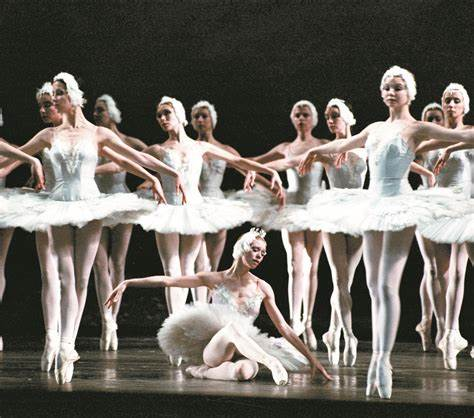
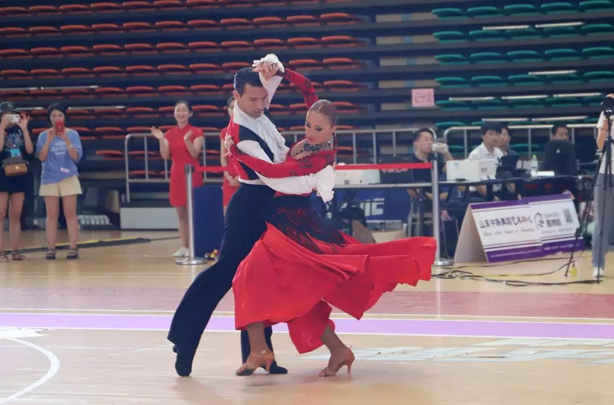
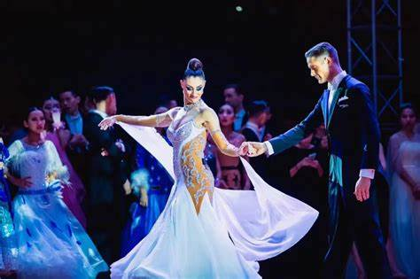
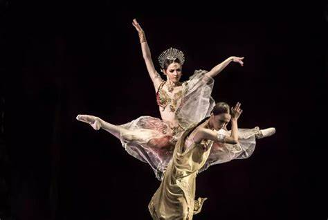
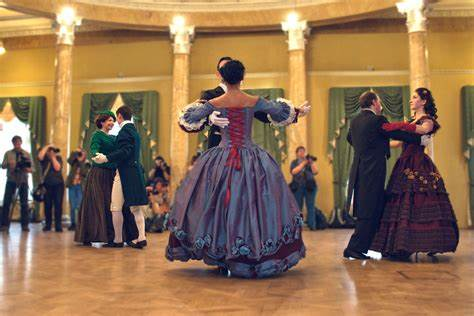

课程推荐
- ballet
- Latin dance
- Hip-hop
- Jazz Dance
- Classical dance
- waltz
- Gb
热门舞种
-

ballet
-

Latin dance
-

GB
-
Jazz Dance
-

Classical dance
-

waltz
30822QLD – Classical and Contemporary Dance, (Musical Theatre & Commercial Dance)
ANZSCO Identifier 211199 Actors, dancers and other entertainers ASCO (Occupational Type) Identifier 2538 Actors, Dancers, and Related Professionals ASCED Qualifications/Programs Educational Field Identifier 1001 Performing Arts Qualifications/CoursesEducational Level Identifier 411 Advanced Diploma Nationally recognized training type 12 courses Classification History Schedule the password classification value start date and end date ANZSCO Identifier 211199 Actors, Dancers and Other Entertainers July 31, 2009 ASCO (Occupational Type) Identifier 2538 Actors, Dancers, and Related Professionals July 31, 2009 ASCED Qualifications/Programs Education Field Identifier 1001 Performing Arts July 31, 2009 Qualifications/CoursesEducational Level Identifier 411 Advanced Diploma 31 July 2009 Nationally recognized training type 12 courses on July 31, 2009
10508NAT - Musical Theatre and Commercial Dance
Theatre dance is a synthesis of dance movements, character dialogues, and lyrics, requiring performers to dance in accordance with the characters in the play and to be able to complete the tasks of the drama in the dance. Theater dance involves a variety of dance types, and the choreographer chooses the use of dance elements according to the needs of the plot, which is an indispensable part of the musical, often plays a role in promoting the development of the storyline of the musical, and is a compulsory course for musical theater actors.
21685VIC - Classical Dance
It is generally referred to as ballet. Ballet is a transliteration of the French Ballet. Classical dance dramas in European countries are collectively known as ballet, which is a kind of dance variety that uses European classical dance as the main means of expression and integrates music, drama, stage art and other art forms. It is commonly known as "pointe dancing" because an important feature of the performance technique is that the actress wears special pointe dancing shoes and dances on pointe. According to legend, ballet first originated in Italy, formed in France, and was introduced to Russia in the 18th century. It became an independent and complete art form at the end of the eighteenth century and the beginning of the nineteenth century, creating pointe dance techniques, developing various aerial jumping and spinning techniques, and producing a complete set of training methods, gradually forming the Italian, French and Russian schools with different stylistic characteristics. After the 20s of the 20th century, modern ballet schools appeared, and many ballet schools were derived one after another, which became popular in Europe and the United States. [3]